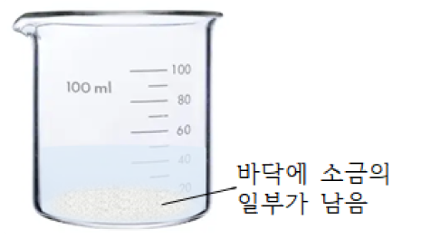
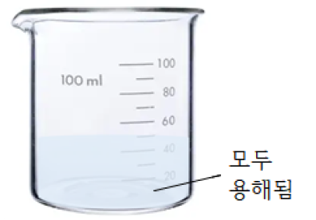

1번
다음은 온도와 양이 같은 물에 소금과 설탕을 각각 아홉 숟가락씩 넣고 유리 막대로 저은 후의 모습입니다.㉠에 들어갈 말로 알맞은 것을 고르세요.
(가) 소금을 넣은 비커

(나) 설탕을 넣은 비커

(나) 비커의 설탕은 물에 모두 용해되었다. (가) 비커 바닥에 남아 있는 소금을 모두 녹이려면 비커에 ㉠
선택하세요.
소금
설탕
물
을 더 넣으면 된다.